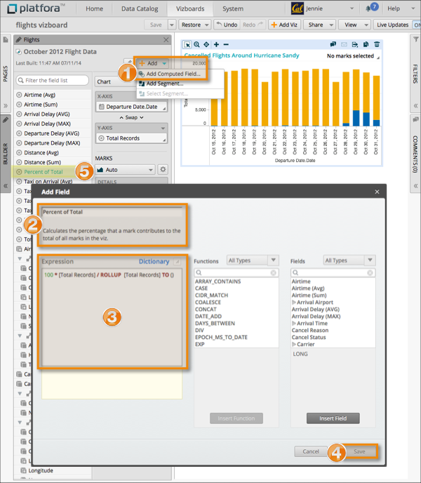

You add a computed field by writing an expression that transforms existing
fields. Computed fields help you refine your data analysis.
Once you define
the computed field, it is added to the lens data panel of the vizboard. You can then use the
computed field by dragging it to a Builder drop zone.
Computed fields contain expressions that can take other fields as input. These fields can be base fields or they can be other computed fields.

-
Select Add Computed Field from the Add menu.
This opens the Add Field expression builder
window.
-
Enter a field name and a description.
The description is optional but very useful for others that might use your analysis later.
-
Choose function from the Functions list.
Use the drop-down to restrict the type of functions you see.
-
Double-click a function from the list to add it to the Expression area.
The Expression panel updates with the function's
template. Also, the Fields list refreshes with those
fields you can use with the function. For example, TO_DATE
works on STRING data types.
-
Double-click a field to add it into the Expression area.
-
Continue adding functions and fields into your expression is complete.
-
Make sure your expression is correct.
The system checks your syntax as you build the expression. The yellow text box
below the Expression area displays error messages.
Platfora only allows you to save expressions that evaluate successfully. If it
cannot resolve an expression, the Save button is not
available.
-
Click Save to add the new computed field to the vizboard.
Computed field names are blue to distinguish them from regular lens fields.
Writing expressions for computed fields is an advanced topic. For information on
working with expression syntax, see Work with Platfora's Expression Language.